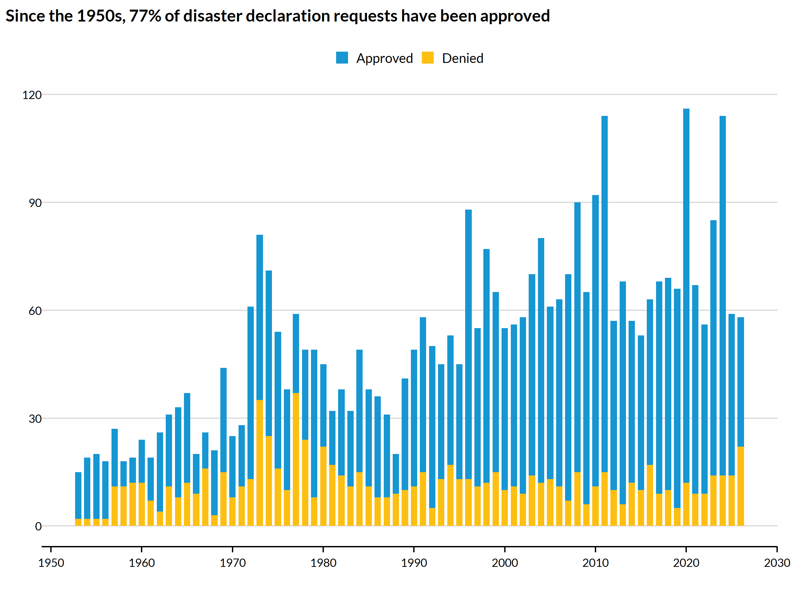
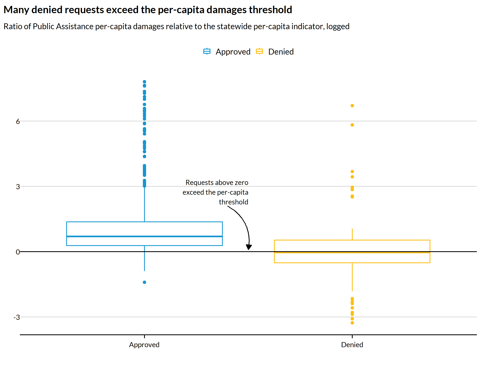
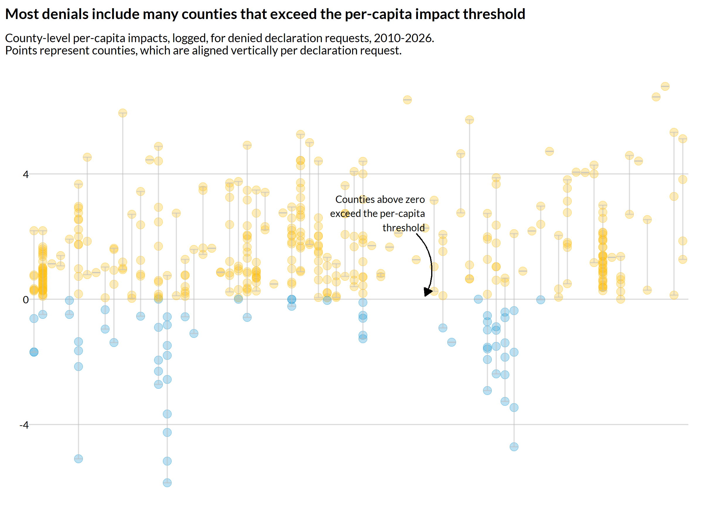

Data disclaimer
The structured data returned by this package are created by extracting values from PDF reports. This process is inherently imprecise, and it is likely that some values in the structured data are incorrect relative to the source PDFs. We have taken significant steps to mitigate the prevalence of such errors through both manual spot-checking and programmatic testing, but users should take this into account if they choose to use these data.
Installation
## install.packages("remotes")
remotes::install_github("UrbanInstitute/preliminary-damage-assessments")Overview
When a state, territory, or tribal (STT) government believes an event exceeds its capacity to respond, it may request a major disaster declaration from the president. Before that request is granted or denied, FEMA and its partners conduct a preliminary damage assessment (PDA) that estimates the scale of the damage and the characteristics of the communities impacted. Information collected during PDAs does not determine whether a disaster declaration request is approved–that is ultimately at the sole discretion of the president–but it does form an important basis for whether the Federal Emergency Management Agency (FEMA) recommends to the president that the president declare a disaster.
STT governments are the leads on disaster declaration requests, and FEMA is the primary agency that coordinates this process, including participating in conducting joint preliminary damage assessments with the STT and local governments and producing the summative PDA reports located at https://www.fema.gov/disaster/how-declared/preliminary-damage-assessments/reports. These reports consistently document key attributes reflecting the PDA findings, such as total estimated Public Assistance (PA) and Individual Assistance (IA) costs, as well as the extent of damage to housing and the characteristics of impacted populations.
However, because these reports are text-based PDFs, and because FEMA does not publish these data in a tabular format, it has been challenging to date to systematically access and use this valuable information to understand when and under what conditions disaster declaration requests are approved and denied.
get_preliminary_damage_assessments() extracts these data from the PDA reports FEMA publishes and then joins them to authoritative datasets from FEMA describing disaster declaration request approvals and denials.
Data sources
| Role | Dataset | Access |
|---|---|---|
| Damage estimates | PDA reports | preliminarydamages::get_preliminary_damage_assessments() |
| Approved requests | DisasterDeclarationsSummaries |
OpenFEMA, via rfema::open_fema()
|
| Denied requests | DeclarationDenials |
OpenFEMA, via rfema::open_fema()
|
The two FEMA datasets are authoritative: they are FEMA’s own structured records of which declaration requests were approved and denied. The PDAs, by contrast, are text-extracted from unstructured PDFs and carry the caveats described in ?get_preliminary_damage_assessments. We treat observations from the authoritative FEMA datasets as defining the universe of declarations, and we map PDAs back to this universe so that we can better understand the relationships between preliminary damages and disaster declaration decisionmaking.
Data preparation
The package provides three functions for accessing PDA data:
-
scrape_pda_pdfs()finds the URLs to every PDA report at https://www.fema.gov/disaster/how-declared/preliminary-damage-assessments/reports and then systematically downloads these PDFs into a user-specified directory. These PDFs are the basis for the dataset produced by the following function. Because FEMA receives and the President makes disaster request decisions on an ongoing basis, the results of this function quickly become stale: new PDA reports are available online but are not reflected in the user’s specified directory. Accordingly, it is important to re-run this function frequently if the most up-to-date data are important. The function does not re-download reports that are already saved in the user-specified directory, so after the initial run, which can be slow, subsequent runs should be very fast–they only add new reports. -
get_preliminary_damage_assessments()walks the user’s specified directory and extracts structured attributes from each PDA report, compiling data from all reports in the directory into a consistent dataset, and joining PDA attributes back to the authoritative FEMA-published datasets of declaration request approvals and denials. -
transform_pda_counties()restructures the request-level data fromget_preliminary_damage_assessments()into a county-request structured dataset. While requests originate from STT governments, they delineate specific counties—both estimated costs per county, and the programs (PA and IA) that are requested for each county.pda_county_indicatorandfema_county_indicatorrecord which source named each county. When a request has no county-level information, the county columns areNA. For statewide requests, a record is returned for each county in the state, even when counties are not named individually. Every county row carriesfema_declaration_request_number, FEMA’s own identifier for the request, so county-level results can be grouped or joined back to their event.
## run this to update (or create for the first time) the local
## store of all PDFS
scrape_pda_pdfs(cache_directory = file.path("data", "pdfs"))
## this extracts attributes from all reports
## use_cache = TRUE will not capture newly-scraped PDFs
pdas = get_preliminary_damage_assessments(
file_path = file.path("data", "pdas.csv"),
directory_path = file.path("data", "pdfs"),
use_cache = TRUE)Analysis
With our data in hand, it’s trivial to summarize the universe of disaster declaration requests over time:
percent_approved = pdas %>%
count(fema_decision) %>%
mutate(percent = round(prop.table(n) * 100, digits = 0)) %>%
filter(fema_decision == "Approved") %>%
pull(percent)
pdas %>%
ggplot() +
geom_bar(aes(x = fema_decision_year, fill = fema_decision)) +
scale_x_continuous(breaks = seq(1950, 2030, by = 10)) +
labs(
title = str_c(glue::glue("Since the 1950s, {percent_approved}% of disaster ",
"declaration requests have been approved")),
x = "",
y = "")
But access to systematic information on damages and housing impacts are the novel contributions from the PDAs.
One of the primary factors intended to determine whether PA is declared is whether the estimated per-capita damages (in dollars), per person, across the entire STT government, exceed an established per-capita threshold or indicator, known as the (statewide) Per Capita Impact (PCI) indicator. In 2026, this PCI is $1.94.
(Because published PDAs are only available from ~2008 onward, we restrict the data to that window.)
pdas %>%
filter(pda_matched == 1, pda_pa_requested == 1, fema_decision_year > 2007) %>%
ggplot(aes(x = fema_decision, y = log(pda_pa_threshold_ratio), color = fema_decision)) +
geom_boxplot(fill = NA) +
geom_hline(yintercept = 0) +
annotate(
"text", x = 1.5, y = 2.75, hjust = 1,
label = str_wrap("Requests above zero exceed the per-capita threshold", 25)) +
annotate(
"curve", x = 1.4, y = 2.1, xend = 1.5, yend = 0.1, curvature = -0.35,
arrow = arrow(length = unit(0.02, "npc"), type = "closed")) +
labs(
title = str_c(
"Many denied requests exceed the per-capita damages threshold") %>% str_wrap(100),
subtitle = str_c(
"Ratio of Public Assistance per-capita damages relative to the statewide ",
"per-capita indicator, logged") %>% str_wrap(100),
x = "", y = "")
There is also a separate PCI at the county level, which accounts for the fact that disaster damages could be concentrated in a subset of counties and warrant a declaration for one or more counties, even if total damages do not meet the statewide PCI and a statewide disaster declaration may not be appropriate. The countywide PCI in 2026 is $4.86.
county_pdas = pdas %>% transform_pda_counties()
county_impacts = county_pdas %>%
add_count(fema_disaster_number) %>%
filter(n > 1, pda_pa_requested == 1) %>%
filter(.by = fema_disaster_number, !(all(is.na(pda_pa_per_capita_impact_county)))) %>%
mutate(
.by = fema_disaster_number,
county_pci_mean = mean(pda_pa_per_capita_impact_county, na.rm = TRUE),
county_pci_sd = sd(pda_pa_per_capita_impact_county, na.rm = TRUE))
county_impacts %>%
filter(fema_decision_year > 2010, fema_decision == "Denied") %>%
mutate(
pda_pa_pci_county_ratio = pda_pa_per_capita_impact_county / pda_pa_per_capita_impact_indicator_countywide,
pda_pa_pci_county_ratio_logged = log(pda_pa_pci_county_ratio)) %>%
mutate(
.by = fema_declaration_request_number,
county_pci_min = min(pda_pa_pci_county_ratio_logged, na.rm = TRUE),
county_pci_max = max(pda_pa_pci_county_ratio_logged, na.rm = TRUE)) %>%
filter(
if_all(
.cols = c(pda_pa_pci_county_ratio_logged, county_pci_min, county_pci_max),
.fns = ~ !is.na(.x) & !is.infinite(.x))) %>%
ggplot(aes(
x = fema_declaration_request_number,
color = pda_pa_pci_county_ratio_logged > 0)) +
geom_point(aes(y = pda_pa_pci_county_ratio_logged), alpha = .3) +
geom_errorbar(
data = . %>% distinct(fema_declaration_request_number, .keep_all = TRUE),
aes(x = fema_declaration_request_number, ymin = county_pci_min, ymax = county_pci_max),
color = "grey",
alpha = .5) +
annotate(
"text", x = 45, y = 2.75, hjust = 1,
label = str_wrap("Counties above zero exceed the per-capita threshold", 25)) +
annotate(
"curve", x = 44, y = 2.1, xend = 45, yend = 0.1, curvature = -0.35,
arrow = arrow(length = unit(0.02, "npc"), type = "closed")) +
labs(
x = "", y = "",
title = "Most denials include many counties that exceed the per-capita impact threshold",
subtitle = str_c(
"County-level per-capita impacts, logged, for denied declaration requests, 2010-2026.\n",
"Points represent counties, which are aligned vertically per declaration request.")) +
coord_cartesian(clip = "off") +
theme(
legend.position = "none",
axis.text.x = element_blank(),
axis.ticks.x = element_blank(),
axis.line.x = element_blank())